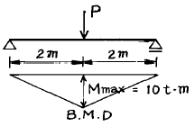
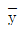
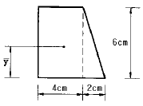
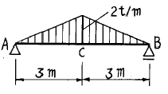
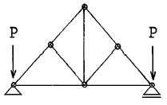
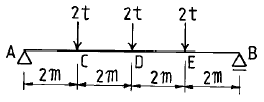
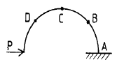
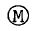
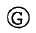
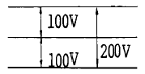

건축산업기사 (2002-03-10 기출문제)
1과목: 건축계획
1. 공동주택 블록플랜의 결정조건 중 거리가 먼 것은?
- 각 단위평면이 2면 이상 외기와 접할 것
- 현관이 계단으로부터 멀지 않을 것 (6m 이내)
- 설비공간의 배치가 어떤 규칙성에 준하며 경제성을 고려할 것
- 동선이 단순하고 혼란치 않을 것
(정답률: 14%)

2. 세계 가족단체 협회가 권장하는 코로느(cologne) 기준 및 숑바르 드 로브(Chombard de Lawve)의 기준에 의한 1인당 주거면적의 표준치는 어느 정도인가?
- 8 m2
- 14 m2
- 16 m2
- 20 m2
(정답률: 64%)
3. 고층사무소 건물의 특별 계단에 있어서 전실(前室 : 부속실)의 계획상 부적당한 것은?
- 전실의 일부가 가능한한 외기에 면하는 것이 좋다.
- 전실에는 스모크 타워와 급기시설이 필요하다.
- 전실의 천정은 가급적 높게한다.
- 전실에 있어서 배연구는 계단실 가까이에, 급기구는 복도쪽에 가깝게 둔다.
(정답률: 32%)
4. 한식에서는 좌식의 특징, 양식에서는 입식의 특징을 갖고 있다. 차이가 발생하는 근본적인 원인은?
- 구조
- 사용연료
- 습도
- 난방법
(정답률: 79%)
5. 주택의 평면계획에 관한 기술중 적합하지 않은 것은?
- 도로의 위치와 방위를 고려해서 현관의 위치를 결정한다.
- 학생용 침실의 침대는 일조 채광상 가급적 창가에 배치한다.
- 부엌은 그 사용시간이 길므로 동남쪽 또는 남쪽에 배치하는 것도 무방하다.
- 다용도실은 부엌에 가깝게 배치하는 것이 좋다.
(정답률: 43%)
6. 집합주택의 형식에 대한 설명 중 옳지 않은 것은?
- 테라스하우스(terrace house)는 각세대마다 테라스를 갖는 연립주택의 일종이다.
- 플랫 시스템(flat system)은 각세대가 단층형으로 된것이다.
- 발코니 시스템(balcony system)은 중복도 형식으로 저층에 알맞다.
- 매조네트 시스템(maisonnette system)은 각세대가 2층이상으로 구성된 형식이다.
(정답률: 50%)
7. 사무소 건축의 코어(Core)안에서 가급적 접근시켜야 할 공간으로서 관계가 먼 것은?
- 잡용실과 급탕실
- 승강기 홀과 출입구 문
- 계단과 승강기 및 화장실
- 파이프와 쓰레기 및 우편물의 수직통로
(정답률: 53%)
8. 상점 건축계획에 관한 기술 중 부적당한 것은?
- 쇼우원도우는 상품에 따라 다르다.
- 상품 진열에 따른 동선을 고려한다.
- 일조를 가장 우선적으로 처리한다.
- 외관은 호소력을 발휘할 수 있게 한다.
(정답률: 69%)
9. 다음 상점중 점두가 폐쇄형에 속하지 않는 것은?
- 미장원
- 서점
- 카메라점
- 보석상
(정답률: 60%)
10. 상점건축의 매장내 진열장(show case)을 배치계획 할 때 가장 먼저 고려할 사항은?
- 상품의 진열
- 고객동선의 원활
- 진열장의 수
- 조명관계
(정답률: 58%)
11. 학교 체육관 계획에서 틀리게 설명된 항목은?
- 표준으로 농구코트를 둘수 있는 크기가 필요하다.
- 천정의 높이는 6m이상으로 한다.
- 체육관을 강당으로 겸용하게 계획해도 된다.
- 창을 크게하여야 하므로 징두리벽은 2m이하로 한다.
(정답률: 65%)
12. 미술실이 주당 26시간 사용되고 있는 중학교에서 1주간의 평균 수업시간은? (단, 미술실의 이용율은 80%임)
- 32시간
- 34시간
- 36시간
- 38시간
(정답률: 40%)
13. 공장의 배치 계획에서 고려할 사항중 옳지 않은 것은?
- 견학자 동선을 고려한다.
- 가장 중요한 작업은 작업 공정상 가장 유리한 위치에 둔다.
- 장래 계획, 확장계획은 충분히 고려한다.
- 생산, 관리, 연구, 후생 등의 시설을 한곳에 집중 시킨다.
(정답률: 58%)
14. 편복도형 고층 아파트에서 이웃간의 친교형성을 위한 장소로서 가장 적당한 곳은?
- 주동 현관
- 단위주호내 거실
- 계단실
- 발코니
(정답률: 36%)
15. 사무소 건축의 집무공간에서 개방형 배치계획의 특징 중 옳은 것은?
- 방 깊이에 변화를 줄 수 없다.
- 공사비가 비교적 높다
- 공간을 절약할 수 있다.
- 프라이버시 유지가 쉽다.
(정답률: 70%)
16. 학교시설을 지역사회에 개방할 경우 가장 바람직한 공간은?
- 컴퓨터실
- 과학실
- 강당
- 미술실
(정답률: 83%)
17. 사무소 건축의 코어(Core)계획에 대한 설명으로 부적당한 것은?
- 엘리베이터홀은 출입구에 가급적 근접시켜 동선을 짧게한다.
- 피난용 특별계단 상호간의 거리는 법정거리 내에서 가급적 멀리한다.
- 잡용실과 급탕실은 가급적 접근시킨다.
- 코어내의 동선과 임대사무실 사이의 동선은 간단히 한다.
(정답률: 22%)
18. 상점건축에 대한 설명 중 틀린 것은?
- 매장 바닥은 고저차를 두어 안정감 있게 계획한다.
- 슈퍼마켓은 입구와 출구를 분리하는 것이 좋다.
- 상점은 고객동선을 가능한한 길게 하여 많은 손님을 수용할 수 있도록 한다.
- 슈퍼마켓에서의 상품배치는 입구근처에서는 주로 생활필수품을 배치한다.
(정답률: 63%)
19. 주택의 침실계획에 관한 설명 중 적당하지 못한 것은?
- 침실의 출입문을 열었을 때 직접 침대가 보이지 않게 하고 출입문은 안여닫이로 한다.
- 아동침실은 정신적으로나 육체적인 발육에 지장을 주지 않도록 안전성 확보에 비중을 둔다.
- 노인실은 다른 가족들과 생활주기가 크게 다르므로 공동생활영역에서 완전히 독립 배치시키는 것이 좋다.
- 객용침실은 소규모 주택에서는 고려하지 않아도 되며 소파베드 등을 이용해서 처리한다.
(정답률: 71%)
20. 공장건축계획에 관한 기술 중 옳지 않은 것은?
- 단조로운 작업을 반복하는 경우는 변화있는 색채계획을 한다.
- 솟을지붕 형태의 지붕은 채광 및 환기에 적합한 방법이다.
- 건축, 선박 등의 생산을 위한 작업장은 공정중심 레이아웃형식이 적당하다.
- 중량이 있는 제품의 경우에는 크레인을 이용하기 때문에 단층건물이 좋다.
(정답률: 46%)
2과목: 건축시공
21. 보통 철골구조인 경우 철골 Ton당 도장 면적으로 옳은 것은?
- 15m2-32m2
- 33m2-50m2
- 51m2-65m2
- 65m2-70m2
(정답률: 32%)
22. 네트워크(NETWORK) 공정표의 장점이라고 볼 수 없는 것은?
- 작업상호간의 관련성을 알기 쉽다.
- 공정계획의 작성시간이 단축된다.
- 공사의 진척관리를 정확히 실시할 수 있다.
- 공기단축 가능요소의 발견이 용이하다.
(정답률: 50%)
23. 관리 사이클의 단계를 바르게 나열한 것은?
- Plan - Check - Do - Action
- Plan - Do - Check - Action
- Plan - Do - Action - Check
- Plan - Action - Do - Check
(정답률: 43%)
24. 표준관입 시험(標準貫入試驗)의 기술(記術) 중에서 틀린 것은 어느것인가?
- 흙의 성질, 강도를 판정하는 토질(土質)시험의 일종 이다.
- 스프릿트 스푼 채취관(spilt spoon sampler)을 지중(地中)에 50㎝관입시킬 때의 타격수 N을 측정한다.
- 추의 무게는 63.5Kg으로 한다.
- 추의 낙하고는 75㎝로 한다.
(정답률: 38%)
25. 아스팔트(Asphalt) 방수공사에 대한 기술 중 옳은 것은?
- 지붕을 사용하지 않는 지붕에는 방수층에 보호누름을 반드시 해야 한다.
- 방수층의 보호누름 모르타르의 신축줄눈은 모르타르바름의 방수효과를 높인다.
- 방수공사용 아스팔트의 침입도는 한냉지에서 큰 것이 좋다.
- 지하실 안방수에 대한 시공은 밀착이 잘되면 지하 수압에 견디게 된다.
(정답률: 24%)
26. 콘크리트 1m3당 소요되는 거푸집 개산면적의 평균 값으로 적당한 것은?
- 4∼5m2
- 6∼7m2
- 8∼9m2
- 10∼12m2
(정답률: 25%)
27. 공장에서 가공 또는 조립을 완료한 철골 부재에 대하여 녹막이 칠을 하여야 할 곳은?
- 조립에 의하여 맞닿는 면
- 콘크리트에 매입되지 않는 부분
- 현장 용접하는 부분
- 고장력 볼트 마찰 접합부의 마찰면
(정답률: 45%)
28. 외벽 모르타르 바르기에 대한 사항중 옳지 않은 것은?
- 모르타르는 초벌,재벌 모두 1:3의 배합으로 한다.
- 초벌 바르기 한 후 적어도 2주이후에 재벌 바르기를 하는 것이 좋다.
- 1회의 바름 두께는 가능한 두껍게 하는 것이 좋다.
- 라스는 메탈라스 또는 와이어라스가 좋다.
(정답률: 55%)
29. 지름 10㎝, 높이 20㎝인 원주 공시체로 콘크리트의 압축 강도를 시험하였더니 18t에서 파괴되었다면 이 콘크리트의 압축강도는?
- 127 ㎏f/cm2
- 229 ㎏fcm2
- 255 ㎏fcm2
- 453 ㎏fcm2
(정답률: 32%)
30. A.E 콘크리트에 관한 기술 중 틀린 것은?
- 콘크리트중에 연행되는 공기량은 3-5% 정도이다.
- 공기량 1% 증가에 따른 압축강도 저하율은 5% 정도이다.
- 조골재의 최대치수가 클수록 공기량이 증가한다.
- 시공 온도가 낮을수록 공기량이 많아진다.
(정답률: 48%)
31. 진공 콘크리트(Vacuum Concrete)의 특징에 있어서 옳지 않은 것은?
- 강도가 극도로 높아지고 내구성이 개선된다.
- 특수믹서로 혼합한 것을 호오스로 운반하여 부어진다.
- 조기강도가 크다.
- 콘크리트가 경화하기전에 진공매트(Mat)로 콘크리트중의 수분과 공기를 흡수하는 공법이다.
(정답률: 20%)
32. 지반 조사방법으로 옳은 것은?
- 지하탐사법 - 관입시험
- 보링 - 터파보기
- 토질시험 - 불교란시료채취
- 지내력시험 - 철관박아넣기
(정답률: 36%)
33. 다음 중 지하연속벽 공법에 사용되지 않는 것은?
- 벤토나이트 이수
- 트레미관
- 수중펌프
- 인터로킹 파이프
(정답률: 27%)
34. 목재의 이음 및 맞춤시의 주의사항으로 옳지 않은 것은?
- 이음 및 맞춤의 위치는 응력이 적은 곳을 피한다.
- 각부재는 약한 단면이 없게 한다.
- 응력의 종류 및 크기에 따라 이음 맞춤에 적절한 것을 선정한다.
- 국부적으로 큰 응력이 작용하지 않도록 하고 철물로 보강한다.
(정답률: 56%)
35. 고강도 콘크리트에 대한 건축공사표준시방서의 설명 중 틀린 것은?
- 콘크리트의 설계기준강도가 보통 콘크리트에서는 400kg/cm2 이상을 말한다.
- 골재의 최대크기는 40mm 이하로써 가능한 25mm 이하를 사용한다.
- 단위수량은 195kg/m3 이하로 한다.
- W/C는 55% 이하로 한다.
(정답률: 27%)
36. 테라조 바르기의 줄눈 나누기의 크기는?
- 면적 : 0.9m2 이내, 최대 줄눈 간격 : 1.2m 이하
- 면적 : 1.0m2 이내, 최대 줄눈 간격 : 1.2m 이하
- 면적 : 1.2m2 이내, 최대 줄눈 간격 : 2.0m 이하
- 면적 : 1.5m2 이내, 최대 줄눈 간격 : 2.0m 이하
(정답률: 45%)
37. 다음 중 아스팔트(Asphalt)방수층에 사용되지 않는 재료는?
- Blind
- Felt
- Roofing
- Primer
(정답률: 48%)
38. 다음 재료중 바닥재료로서 부적당한 것은?
- 에폭시(epoxy)
- 리놀리움(linoleum)
- 플라스틱시이트(plastic sheet)
- 샌드위치판(sandwitch panel)
(정답률: 38%)
39. 플라스틱 바름바닥재 중 공기중의 수분과 화학반응하는 경우 저온과 저습에서 경화가 늦으므로 5℃ 이하에서 촉진제를 사용하는 것은 어느 것인가?
- 에폭시수지
- 아크릴수지
- 폴리우레탄
- 클로로프렌고무
(정답률: 47%)
40. 분할 도급 계약제도에 관한 설명으로 적합한 것은?
- 기술, 자본력(資本力)등이 우수한 업자를 선정한다.
- 현장관리가 비교적 용이하다.
- 위생, 급수, 난방과 같은 부대설비공사를 전문공사업자에게 도급시킨다.
- 공사가 조잡해질 위험이 있다.
(정답률: 30%)
3과목: 건축구조
41. 시멘트블록조에 관한 설명 중 옳지않은 것은?
- 대린벽 중심선간의 거리를 벽의 길이라 한다.
- 보강블록조의 벽량은 15cm/m2 이상으로 한다.
- 테두리보의 춤은 내력벽 두께의 1.5배 이상으로 한다
- 기초보의 춤은 처마높이의 1/20 이상으로 한다.
(정답률: 37%)
42. 그림과 같은 단순보에서 하중 P의 값으로 옳은 것은?

- 5t
- 10t
- 15t
- 20t
(정답률: 34%)
43. 그림과 같은 단면의 도심위치

는?
- 2.2 cm
- 2.4 cm
- 2.6 cm
- 2.8 cm
(정답률: 20%)
44. 도심지에 건축물의 기초를 앉힐 경우 인접대지 경계선 부근에서 인접한 기초가 문제가 될수 있다. 이때 사용할 수있는 가장 적합한 기초는?
- 복합기초
- 독립기초
- 온통기초
- 줄기초
(정답률: 22%)
45. 그림과 같은 단순보의 C점의 휨모우먼트 값은?

- 3tㆍm
- 6tㆍm
- 9tㆍm
- 12tㆍm
(정답률: 24%)
46. 그림의 지붕틀에서 응력이 생기지 않는 부재의 수는?

- 1개
- 2개
- 3개
- 4개
(정답률: 44%)
47. 내력벽 벽돌 쌓기에 있어서 영식 쌓기가 좋은 이유는?
- 토막벽돌을 이용할수 있어 경제적이기 때문에
- 쌓기 쉬움으로 공사 진행이 빠르기 때문에
- 통줄눈이 생기지 않아 구조적으로 유리하기 때문에
- 일반적으로 외관이 좋기 때문에
(정답률: 50%)
48. 철근콘크리트보에 헌치를 두는 경우에 대한 설명 중 옳지 않은 것은?(오류 신고가 접수된 문제입니다. 반드시 정답과 해설을 확인하시기 바랍니다.)
- 외관상 안정감이 커진다.
- 늑근 간격이 좁아진다.
- 보단면을 줄여도 된다.
- 전단력과 모우먼트에 대한 강성이 증가한다.
(정답률: 20%)
49. 보강블록조에 대한 설명 중 틀린 것은?
- 세로철근은 기초판,테두리보에 40d 이상 정착한다.
- 내력벽의 두께는 15cm 이상으로 한다.
- 내력벽은 통줄눈으로 쌓지 못한다.
- 벽끝, 모서리 부분에는 ø 12 mm의 철근을 세로로 배치하여야 한다.
(정답률: 46%)
50. 강도설계법에서 휨을 받는 부재의 콘크리트 압축연단에서 극한 변형율의 크기는 얼마로 가정하는가?
- 0.003
- 0.002
- 0.001
- 0.004
(정답률: 54%)
51. 플랫슬래브구조에 대한 기술 중 옳지 않은 것은?
- 건물 내부에는 보 없이 바닥판 만으로 구성하고 그 하중은 직접 기둥에 전달한다.
- 바닥의 주근은 1방향으로 배근한다.
- 구조가 간단하고 실내 이용률이 높다.
- 슬래브의 두께는 15㎝ 이상으로 한다.
(정답률: 45%)
52. 구조부재에서 단면2차반경은 어느 부재를 설계할 때 사용 되는가?
- 인장재의 설계
- 압축재의 설계
- 휨재의 설계
- 전단력에 대한 설계
(정답률: 20%)
53. 장변이 단변의 2배가 넘는 슬래브는 단변을 경간으로 하는 1방향 슬래브로 설계해야 한다. 그이유는?
- 철근이 절약되기 때문에
- 하중의 대부분이 단변방향으로 작용하기 때문에
- 구조계산이 편리하기 때문에
- 휨모멘트가 작기 때문에
(정답률: 59%)
54. 그림과 같이 집중하중이 작용하는 단순보의 최대휨모멘트 값은?

- 6tㆍm
- 8tㆍm
- 10tㆍm
- 12tㆍm
(정답률: 27%)
55. 목구조에서 기둥과 평보의 접합부분에 버팀대를 설치하는 이유 중 가장 옳은 것은?
- 기둥의 휨 방지를 위하여
- 보의 흔들림을 방지하기 위하여
- 수평하중과 수직하중을 기둥으로 집중시키기 위하여
- 절점의 강성을 높이기 위하여
(정답률: 25%)
56. 강도설계법에서 인장을 받는 이형철근의 기본 정착길이로 옳은 것은？ (단, fy=4000kg/cm2, fck=210kg/cm2, 철근은 D19 이고 철근 1개의 단면적은 2.87cm2임)
- 45cm
- 48cm
- 67cm
- 76cm
(정답률: 24%)
57. 그림과 같은 캔틸레버형 아아치에서 전단력값이 최소인 곳은?

- A 점
- B 점
- C 점
- D 점
(정답률: 30%)
58. 강도설계법에 의한 철근콘크리트 직사각형 보에서 콘크리트가 부담할 수 있는 공칭 전단강도는? (단, fck=240kg/cm2, b=30cm, d=50cm 이다.)
- 6.9t
- 9.7t
- 11.6t
- 12.3t
(정답률: 23%)
59. 목재 반자의 구조를 위에서 아래로 나열한 것 중 옳은 것은?
- 달대 - 달대받이 - 반자틀 - 반자틀 받이
- 반자틀 받이 - 달대 - 달대받이 - 반자틀
- 반자틀 - 반자틀 받이 - 달대 - 달대받이
- 달대받이 - 달대 - 반자틀 받이 - 반자틀
(정답률: 34%)
60. 조립식구조의 특성 중 옳지 않은 것은?
- 공장 생산이 가능하여 대량생산을 할수 있다.
- 기계화 시공으로 단기완성이 가능하다.
- 각 부품과의 접합부가 일체화되어 절점을 강(剛)으로 하기가 용이하다.
- 현장 거푸집공사가 절약되며 정밀도가 높고 강도가 큰 콘크리트 부재를 사용할수 있다.
(정답률: 53%)
4과목: 건축설비
61. 압축식 냉동기의 주요 구성요소가 아닌것은?
- 팽창 밸브
- 응축기
- 증발기
- 수액기
(정답률: 36%)
62. 인터폰 접속방식이 아닌 것은?
- 모자식
- 상호식
- 복합식
- PID방식
(정답률: 28%)
63. 배관에서 일반적으로 피복을 하지 않아도 되는 곳은?
- 냉각다리(cooling leg)
- 사이아미즈 콘넥션(Siamese Connection)
- 급수관
- 배수관
(정답률: 22%)
64. 난방 부하 계산에 필요치 않은 사항은?
- 구조체를 통한 손실 열량
- 환기에 의한 손실 열량
- 틈새 바람에 의한 손실 열량
- 재실 인원에 따른 발열량
(정답률: 27%)
65. 정화조에서 혐기성 박테리아는 어느곳에서 활동하는가?
- 산화조
- 부패조
- 소독조
- 여과조
(정답률: 31%)
66. 전기설비 도면에서 전열기 도시기호는?


(정답률: 48%)
67. 급수배관 설계에서 마찰손실 등을 고려할때 적절한 관내 유속은?
- 1 ∼ 2m/sec
- 2 ∼ 4m/sec
- 4 ∼ 6m/sec
- 6 ∼ 8m/sec
(정답률: 9%)
68. 화재발생 장소별 소화설비로서 가장 부적당한 것은?
- 자동차 차고 - 물분무 소화설비
- 고층건축물의 전기실 - 탄산가스 소화설비
- 백화점의 매장 - 스프링클러설비
- 박물관 전시실 - 드렌처설비
(정답률: 15%)
69. 과전류가 흐를때 자동적으로 회로를 차단시켜 보호하는 것은?
- 나이프 스위치(knief switch)
- 서키트 브래커(circuit breaker)
- 컷 아웃 스위치(cut out switch)
- 금속함 개폐기
(정답률: 45%)
70. 방열기의 방열량이 5000㎉/h이고 방열기의 입출구 수온차가 10℃인 방열기의 순환수량은 몇ℓ /min인가? (단, 물의 평균비열은 1㎉/㎏℃이다.)
- 8.3ℓ /min
- 50ℓ /min
- 83.3ℓ /min
- 5000ℓ /min
(정답률: 23%)
71. 간선의 전기 방식 중 다음 그림은?

- 단상 2선식
- 단상 3선식
- 3상 3선식
- 3상 4선식
(정답률: 18%)
72. 주택의 급수관 내에 유속이 2m/sec이고 유량이 15ℓ/sec일때 급수 관경으로 가장 적당한 것은?
- 75㎜
- 100㎜
- 125㎜
- 150㎜
(정답률: 6%)
73. 병원에 설치되는 발전기로서 가장 적당한 것은?
- 초고속기
- 고속기
- 중속기
- 저속기
(정답률: 18%)
74. 배선공사에서 내식성이 좋으므로 부식성가스 또는 용액을 발산하는 화학공장의 배선에 가장 적합한 공사는?
- 애자사용 은폐공사
- 금속관 공사
- 경질 비닐관 공사
- 목재 모울드 공사
(정답률: 18%)
75. 증기난방의 보일러 주변배관에서 증기헤더(Steam Header)를 거쳐서 증기주관을 배관하는 이유는?
- 보일러내의 빈불때기를 막기 위하여
- 고압의 증기를 공급하기 위하여
- 배관의 각 계통별로 증기를 고르게 급송하기 위하여
- 열손실에 따라서 생기는 배관 중의 응축수량을 줄이기 위하여
(정답률: 16%)
76. 보일러 용 굴뚝의 크기를 결정하는 방법 중 옳지 않은 것은?
- 굴뚝의 높이는 보일러의 화상면에서 굴뚝 끝까지를 말한다.
- 연료의 소비량은 굴뚝높이의 평방근의 값에 비례한다.
- 굴뚝의 최소 단면적(m2)은 연료 소비랑(㎏/h)에 반비례한다.
- 굴뚝의 구조적 강도는 풍압, 자중 및 열응력에 의하여 계산한다.
(정답률: 46%)
77. 유체를 한 방향으로만 흐르게 하는 기구는?
- 스트레이너
- 볼탭
- 체크 밸브
- 배수 트랩
(정답률: 30%)
78. 증기난방 용 증기트랩이 아닌 것은?
- 열동 트랩
- 플라스터 트랩
- 버킷 트랩
- 플로우트 트랩
(정답률: 19%)
79. 관 마찰손실 수두에 대한 설명이 잘못된 것은?
- 관마찰계수가 클수록 증가한다.
- 배관의 직경에 반비례한다.
- 배관길이에 비례한다.
- 유속의 3승에 비례한다.
(정답률: 34%)
80. 전반조명과 국부조명 병용의 경우에 전반조명의 조도는 국부조명에 의한 조도의 최소 어느 정도로 하는가?
- 1/5 이상
- 1/10 이상
- 1/15 이상
- 1/20 이상
(정답률: 42%)
5과목: 건축관계법규
81. 배연설비를 하여야 하는 건축물에 설치하여야 하는 배연구의 유효면적은?
- 0.5m2 이상으로서 바닥면적의 1/1,000 이상
- 1m2 이상으로서 바닥면적의 1/1,000 이상
- 0.5m2 이상으로서 바닥면적의 1/100 이상
- 1m2 이상으로서 바닥면적의 1/100 이상
(정답률: 20%)
82. 공사감리자가 공사시공자에게 상세시공도면의 작성을요청 할 수 있는 대상건축물의 연면적의 합계는 몇 m2 이상인가?
- 2,000m2 이상
- 3,000m2 이상
- 4,000m2 이상
- 5,000m2 이상
(정답률: 10%)
83. 피뢰설비의 구조에 관한 기술이 틀린 것은?
- 돌침은 지름 12㎜이상인 알루미늄, 철 또는 강봉을 사용한다.
- 피뢰도체 및 피뢰도선과 전선 및 전화선과는 1.5m이상 띄어야 한다.
- 피뢰도선의 재료가 알루미늄인 경우 그 단면적은 30mm2 이상이어야 한다.
- 인하도선 사이의 간격은 50m 이하로 해야한다.
(정답률: 15%)
84. 지하층의 비상탈출구에 관한 설명이 잘못된 것은?
- 비상탈출구의 유효높이는 1.5m 이상으로 한다.
- 비상탈출구는 출입구로부터 3m 이상 떨어진 곳에 설치한다.
- 비상탈출구에서 피난층 또는 지상으로 통하는 복도나 직통계단까지 이르는 피난통로의 유효너비는 0.75m 이상으로 한다.
- 비상탈출구의 문은 실외에서 항상 열 수 있는 구조로 한다.
(정답률: 25%)
85. 다음 중 대수선의 행위에 속하지 않는 것은?
- 미관지구 안에서 건축물의 담장을 변경하는 것
- 피난계단을 해체하여 변경하는 것
- 기둥과 보를 각각 2개씩 해체하여 수선하는 것
- 방화구획을 위한 바닥을 10제곱미터를 해체하여 수선하는 것
(정답률: 23%)
86. 방화구획의 설치기준에 대한 기술 중 틀린 것은?
- 3층 이상의 층과 지하층은 각 층마다 구획한다.
- 10층 이하의 층에서 바닥면적 1,000m2 이내마다 구획한다.
- 11층이상의 층에서 실내마감재가 불연재료이고 스프링클러 설비가 되어 있는 경우 바닥면적 1,500m2이내 마다 구획한다.
- 주요 구조부가 내화구조로 된 바닥, 벽에 대한 마감은 불연재료로 하고 문은 을종방화문으로 구획하여야 한다.
(정답률: 37%)
87. 건축법상 승용승강기를 설치하여야 하는 대상건축물의 원칙적인 기준은?
- 건축물의 용도와 거실바닥면적
- 층수와 연면적
- 층수와 거실바닥면적의 합계
- 건축물의 용도와 연면적
(정답률: 28%)
88. 주차장법의 목적에 규정된 내용이 아닌 것은?
- 주차장의 설치
- 주차장의 정비
- 주차장의 이용
- 주차장의 관리
(정답률: 15%)
89. 건축물과 분리하여 공작물을 축조하고자 하는 경우 시장 · 군수 · 구청장에게 신고를 하여야 하는 공작물의 기준으로 옳지 않은 것은?
- 높이 2m를 넘는 옹벽 또는 담장
- 높이 4m를 넘는 굴뚝
- 높이 6m를 넘는 장식탑· 기념탑
- 높이 8m를 넘는 고가수조
(정답률: 29%)
90. 의무적으로 설치하여야 하는 기계식주차장의 정류장 확보에 관한 설명으로 옳은 것은?
- 주차대수가 20대를 초과하는 매 20대마다 1대분
- 주차대수가 20대를 초과하는 매 30대마다 1대분
- 주차대수가 30대를 초과하는 매 20대마다 1대분
- 주차대수가 30대를 초과하는 매 30대마다 1대분
(정답률: 28%)
91. 비상용승강기의 승강장 구조의 설명으로 틀린 것은?
- 승강장의 창문· 출입구 기타 개구부를 제외한 부분은 당해 건축물의 다른 부분과 내화구조의 바닥 및 벽으로 구획할 것
- 벽 및 반자가 실내에 접하는 부분의 마감재료는 불연재료로 할 것
- 승강장은 피난층을 제외한 각 층의 내부와 연결될 수있도록 하되, 그 출입구에는 갑종 또는 을종방화문을 설치할 것
- 피난층이 있는 승강장의 출입구로부터 도로 또는 공지에 이르는 거리가 30m 이하일 것
(정답률: 38%)
92. 당해 주차장의 설치에 소요되는 비용을 시장. 군수 또는 구청장에게 납부함으로써 부설주차장의 설치의무가 면제 되는 주차장의 규모는?
- 주차대수 200대 이하의 규모
- 주차대수 250대 이하의 규모
- 주차대수 300대 이하의 규모
- 주차대수 350대 이하의 규모
(정답률: 29%)
93. 지체장애인의 전용주차장에 직각주차 형식인 주차단위 구획을 할 경우 주차대수 1대당 최소 면적은?
- 21.45m2
- 19.8m2
- 16.5m2
- 11.5m2
(정답률: 30%)
94. 기계식주차장의 설치 기준 중 옳지 않은 것은?
- 중형 기계식 주차장은 너비 8.1m이상, 길이 9.5m이상의 전면공지를 확보해야 한다.
- 주차대수가 30대를 초과하는 매 20대마다 1대분의 정류장을 확보하여야 한다.
- 기계식 주차장에서 자동차의 정류장의 규모는 대형인 경우 길이 5.75m이상, 너비 2.⑤m이상으로 한다.
- 정류장은 전면공지와 접하는 장소에 자동차가 대기할 수 있는 장소이다.
(정답률: 15%)
95. 건축법상 용어에 대한 설명으로 틀린 것은?
- 건축선은 대지와 도로의 경계선으로 한다.
- 대지란 지적법에 의하여 각 필지로 구획된 토지를 말한다.
- 주요구조부라 함은 내력벽· 기둥· 바닥· 보· 지붕틀 및 주계단을 말한다.
- 유선방송수신시설과 공동시청안테나는 건축설비가 아니다.
(정답률: 27%)
96. 총주차대수 규모가 8대 이하인 부설주차장의 구조 및 설비기준을 완화할 수 있는 주차장의 형태는?
- 기계식 주차장 지하식
- 기계식 주차장 공작물식
- 자주식 주차장 지평식
- 자주식 주차장 건축물식
(정답률: 20%)
97. 건축법상의 용도분류에서 서로 관련이 없는 것은?
- 공공용 시설 - 군사시설
- 동물 및 식물관련시설 - 버섯재배사
- 관광휴게시설 - 어린이회관
- 숙박시설 - 유스호스텔
(정답률: 9%)
98. 시장· 군수· 구청장이 도시계획시설 또는 도시계획시설 예정지에서 건축을 허가할 수 있는 가설건축물의 기준으로 옳지 않은 것은?
- 철근콘크리트조 또는 철골철근콘크리트조일 것
- 존치기간은 3년 이내일 것
- 3층 이하일 것
- 전기· 수도· 가스 등 새로운 간선공급설비의 설치를 요하지 아니할 것
(정답률: 12%)
99. 다음 내화구조에 관한 것 중 적합한 것은?
- 무근콘크리트조로 된 계단은 내화구조가 아니다.
- 철재로 보강된 유리블록 또는 망입유리로 된 지붕은 내화구조이다.
- 철재의 양면을 두께 4㎝ 이상의 철망모르타르 또는 콘크리트로 덮은 바닥은 내화구조이다.
- 작은 지름이 25㎝ 이상인 철골기둥으로서 두께 3㎝이상의 콘크리트로 덮은 것은 내화구조이다.
(정답률: 22%)
100. 층수가 15층인 건축물에서 건축법상 다중이용건축물에 해당되는 것은?
- 바닥면적의 합계가 3,000m2인 관광숙박시설
- 바닥면적의 합계가 5,000m2인 운동시설
- 바닥면적의 합계가 3,000m2인 교육연구시설
- 바닥면적의 합계가 5,000m2인 종합병원
(정답률: 19%)